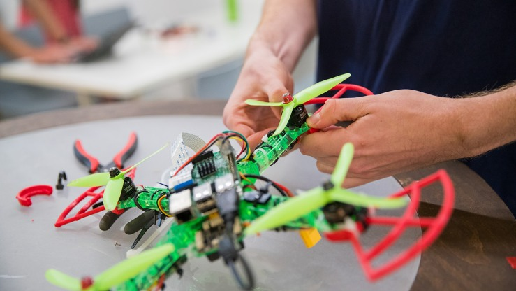

Highlights of My Projects and Work/Academic Experiences
| Activity | Description | Picture/Link |
|---|---|---|
| UT Austin Summer Research | My group and I undertook a project to address the transportation needs of people living on the outskirts of Austin, Texas.
We recognized that many individuals in these areas faced difficulties accessing public transportation and getting to the city center due to a lack of proper transportation infrastructure.
To address this issue, we decided to create a website that would help these individuals schedule rides that would take them to the public transportation stations located in Austin. Technologies used: HTML, CSS, and JavaScript |
Github Link |
| Mini Mania - Mini game website |
As part of a team project, I collaborated with five other Computer Science majors to create a mini game website. The website contained three minigames designed using HTML, NodeJS, and Unity.
We also developed databases to store users' information and game records using Docker servers provided by the University of Colorado Boulder.
This project allowed us to combine our skills in programming, game development, and database management to create an engaging website with interactive games.
Technologies used: HTMl, CSS, JavaScript, NodeJS, and Unity |
Github Link |
| UAV’s and Flying Robots workshop at Brown University | The UAV's and Flying Robots workshop at Brown University is a program that provides participants with hands-on training and education in the field of unmanned aerial vehicles (UAVs) and flying robots. The workshop may include lectures, demonstrations, and practical exercises that teach participants about the various aspects of UAVs and flying robots, such as their design, operation, and maintenance. Participants may also learn about the legal and ethical implications of using UAVs and flying robots. The workshop is likely to be held at Brown University in Rhode Island, which is known for its strong engineering and robotics programs. |  |